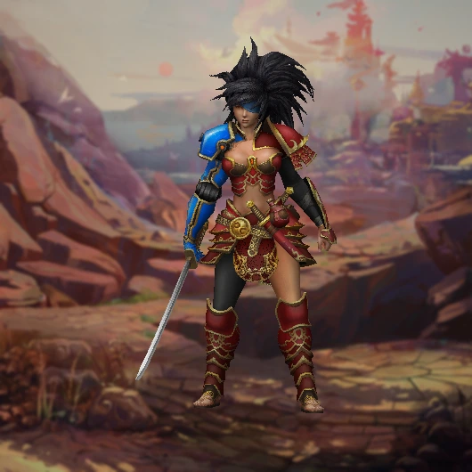
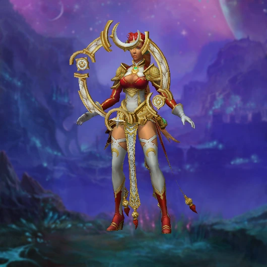
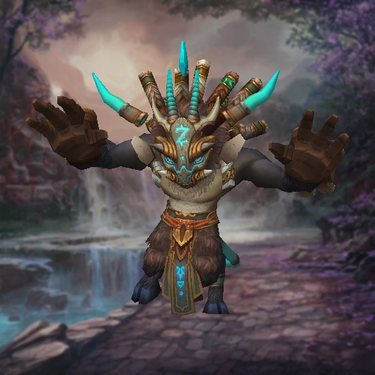
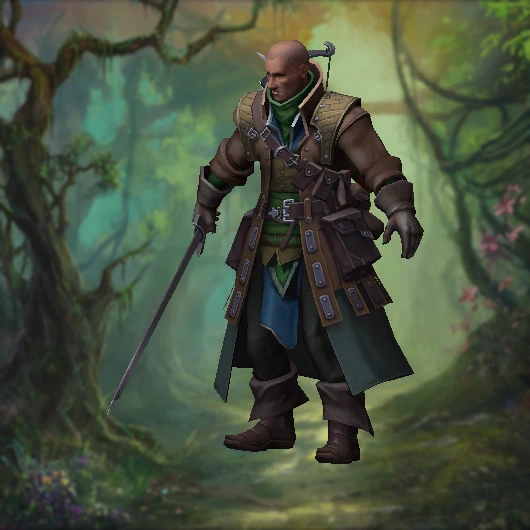
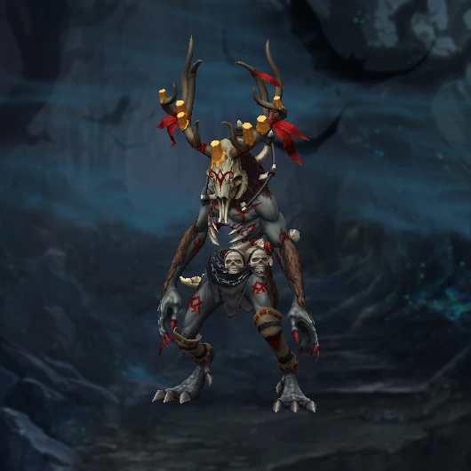
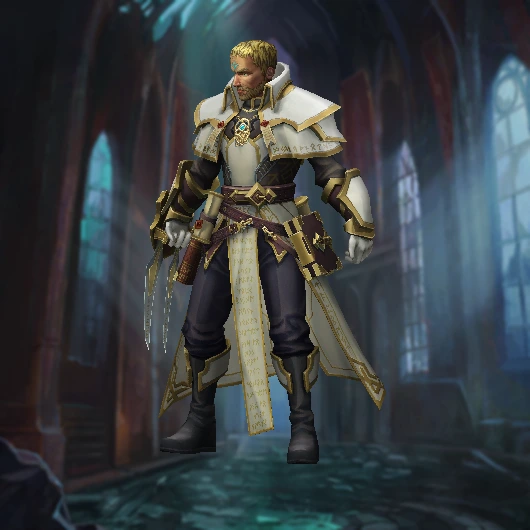

ART RESEARCH · SOURCE AUDIT
27 名英雄的立绘素材核对
这 27 位英雄使用固定版本仓库中的原版网格、贴图和待机姿势进行全身渲染。保留统一取景与灯光，使用原版场景底图。可对应到英雄的场景优先采用，别无专属底图时按旧站插画氛围选景。原公告插画仍可从每条记录打开。部分单独挂载的武器、伙伴和特效未纳入静态渲染。
官方网站历史参考：Nival 产品介绍 · Prime World 官方 Steam 历史公告 · 公开源码。本页的外链需要联网；网站其他页面仍可离线阅读。











